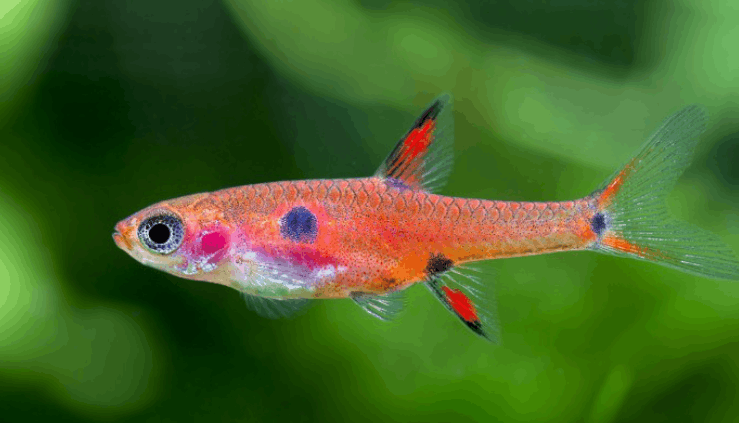
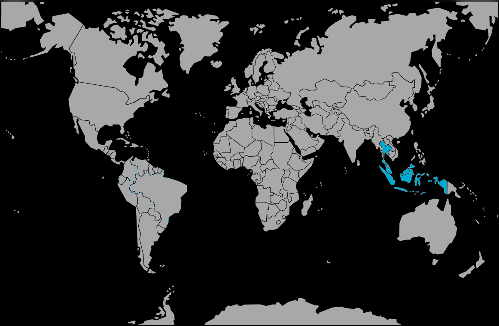

Systématique
- Ordre : Cypriniformes
- Famille : Danionidae
- Genre : Boraras
- Espèce : B. maculatus
- Syn. : Rasbora maculata

Boraras maculatus, souvent appelé Rasbora nain ou Rasbora tacheté, est l'espèce type du genre Boraras, décrite par Duncker en 1904.
C'est un poisson miniature mesurant à peine 2,0 à 2,5 cm, ce qui le classe parmi les plus petits vertébrés. Il possède un corps rouge orangé (plus intense chez le mâle) marqué par trois taches noires distinctes : une grosse tache latérale derrière l'opercule, une plus petite à la base de la nageoire anale et une autre à la base de la queue.
Il se distingue de Boraras brigittae par l'absence de ligne noire continue sur le flanc, et de Boraras merah par la netteté et la rondeur de ses taches (celles de merah sont souvent moins définies).
C'est un poisson de banc grégaire et paisible, parfaitement adapté aux "nano-aquariums". Il est indispensable de le maintenir en groupe d'au moins 10 à 12 individus pour observer un comportement naturel et des couleurs vives.
Très timide s'il est associé à de gros poissons, il s'épanouit dans un bac spécifique ou avec des crevettes. Il apprécie la végétation dense et une lumière tamisée qui le rassure.
Mode : ovipare (diffuseur d'œufs).
La reproduction est continue en aquarium si les paramètres sont bons (eau acide et douce). Les mâles paradent pour attirer les femelles vers des massifs de plantes fines (mousse de Java) où quelques œufs sont expulsés.
Les parents ne s'occupent pas des œufs et peuvent les manger. Les alevins sont minuscules et nécessitent une micro-faune (infusoires) pour se nourrir les premiers jours.
Dimorphisme sexuel : Le mâle est plus svelte et présente une coloration rouge beaucoup plus intense et uniforme que la femelle. La femelle est plus ronde, avec un ventre souvent argenté ou rose pâle, et ses couleurs sont plus ternes.
Espérance de vie : Environ 3 à 5 ans.
Il est originaire d'Asie du Sud-Est, présent dans la péninsule malaise (Malaisie, sud de la Thaïlande), à Singapour et sur l'île de Sumatra (Indonésie).
Il habite les ruisseaux forestiers lents et les marais tourbeux d'eau noire ("blackwater"). L'eau y est acide (pH 4,5 à 6,5), très douce et teintée par les tanins des feuilles mortes et du bois en décomposition.
Répartition

Origine naturelle :
- Asie du Sud-Est.
- Malaisie (Péninsule).
- Singapour.
- Indonésie (Sumatra).
- Thaïlande (Sud).
Paramètres de maintenance
Température : 24 à 28 °C.
pH : 4,5 à 6,5 (eau acide impérative pour le bien-être).
GH : 1 à 10 °dGH (eau très douce).
Volume conseillé : Minimum 20 à 30 L. Idéal pour les petits volumes plantés, à condition que l'eau soit stable et mature.
Régime alimentaire
Régime : carnivore / insectivore (micro-prédateur).
Dans la nature, il chasse de minuscules insectes et du zooplancton.
En aquarium, il nécessite une nourriture adaptée à sa petite bouche : nauplies d'artémias, micro-vers, daphnies, cyclops et paillettes réduites en poudre fine.